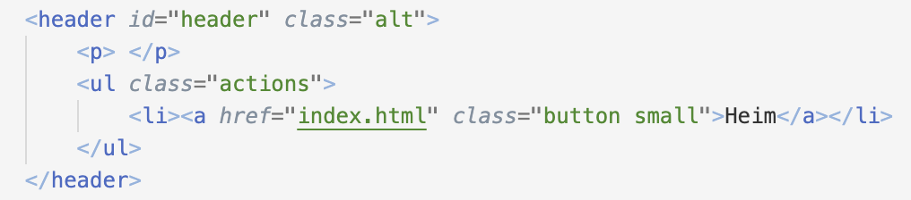

- Verkefnalýsing
-
Veldu eða smíðaðu html sniðmát fyrir vefsíðuna þína, skipulegðu hana með upplýsingum um þína ferilskrá. Skrásettu ítarlega hvernig þú framkvæmdir fyrsta verkefnið og settu á github með því að nota Git bash. Mikilvægt er að fram komi hvaða áskoranir komu upp og hvernig leyst var úr þeim, í máli og myndum.
- Undirbúningsvinna
-
Áður en ég byrjaði á verkefninu byrjaði ég á að sækja forritið Brackets og velja mér sniðmót af síðunni html5up. Svo horfði ég á nokkur myndbönd, m.a. myndbönd frá kennaranum, og skoðaði vefsíðuna w3schools
- Uppsetning á Github
-
Ég fylgdi leiðbeiningum af Github docs> til að setja upp repository. Ég byrjaði á að uploada skránum inn á repositoryið á Github en það gaf alltaf 404 villu. Ég endaði á að clone-a repositoryið í gitbash og setja skrárnar inn á möppuna sem varð til á tölvunni. Svo notaði ég eftirfarandi Gitbash skipanir.
cd HI/Brackets git clone https://github.com/Brynjaa/brynjaa.github.io.git cd brynjaa.github.io git add . git commit -m "Vefsíða sniðmót" git push origin/mainÞegar ég keyrði skipunina git push commit var ég beðin um notendanafn og lykilorð. Ég þurfti að fara inn á github í stillingar til að finna personal access token til að setja inn fyrir lykilorðið. Eftir þetta ákvað ég að nota frekar Visual Studio Code og notaði Source control flipann til þess að uppfæra síðuna mína.
- Að búa til vefsíðuna
-
Þegar ég var búin að uploada vefsíðunni á Github fór ég í að breyta sniðmótinu svo það hentaði mér. Ég bætti við header sem bendir aftur á "Heim" síðuna á "Verkefni" og "Ferilskrá" síðurnar með eftirfarandi kóða:
Svo bætti ég við eins header inn á þessa síðu sem benti bæði "Heim" og aftur inn á "Verkefni" síðuna. Svo fór ég í að setja inn myndir og setti inn síðu fyrir ferilskrá og aðra fyrir verkefni. Að lokum bætti ég við ferilskránni minni inn á "Ferilskrá" síðuna